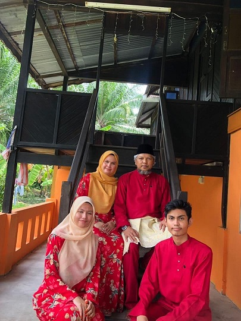
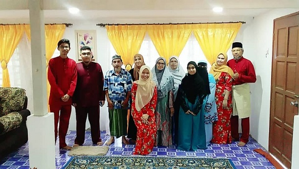
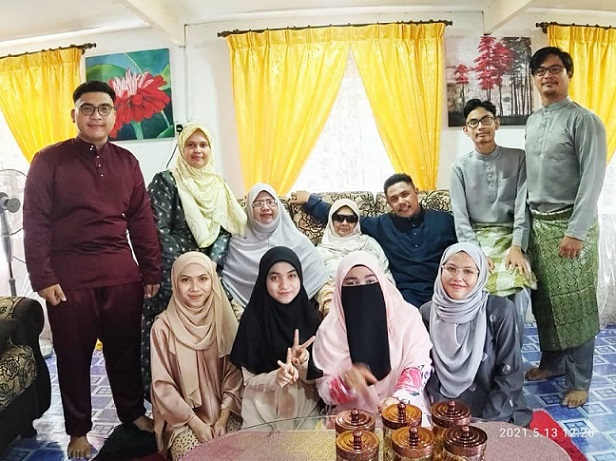
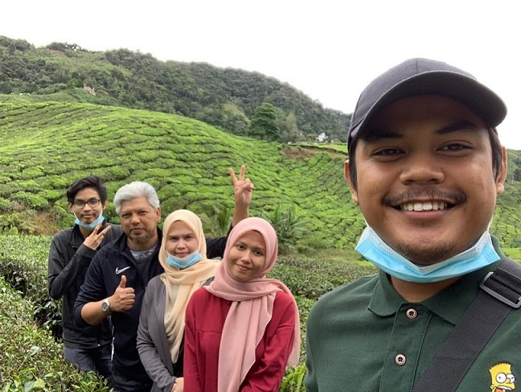
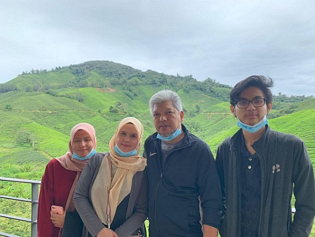

Important Moments in My Life
Family Hari Raya Aidilfitri Memories
Hari Raya 2019
This is my main family pictures. This pictures holds special place in my heart since this is the last celebration of Hari Raya with my step father. My step father has passed away in year 2020. This makes me sad because I misses him so much.
This is my whole family pictures. This includes my cousin, my uncle and aunty. My aunty is the older sister of my mother. In this pictures also have my grandmother named Siti Habsyah. His husband (my grandfather) has already passed away back in 2002. I will always cherish this moment.
Hari Raya 2021
This is my family picture during celebration Hari Raya 2021. Back in 2020 we do not have any family picture because covid-19 situation at that time is really bad. During this celebration, I already lost my step father but the memories of him still fresh in my mind.
Vacation to Cameron Highlands
In 2019, my family go vacation at Cameron Highlands, Pahang. The scenery at there is very beautiful and comforting. In this momemnt, we take picture at hills of "Ladang Teh Boh". The weather are also humid and nice.
This is where my family enjoys the great scenery of tea farm of Teh Boh. There also cafe which they served fresh pastries made from strawberries and others. The tea available are also available to purchased. My family orders 4 strawberry pie and 4 cup or original Tea Boh teas. I savors the food, drinks and memories as much can I remmember.